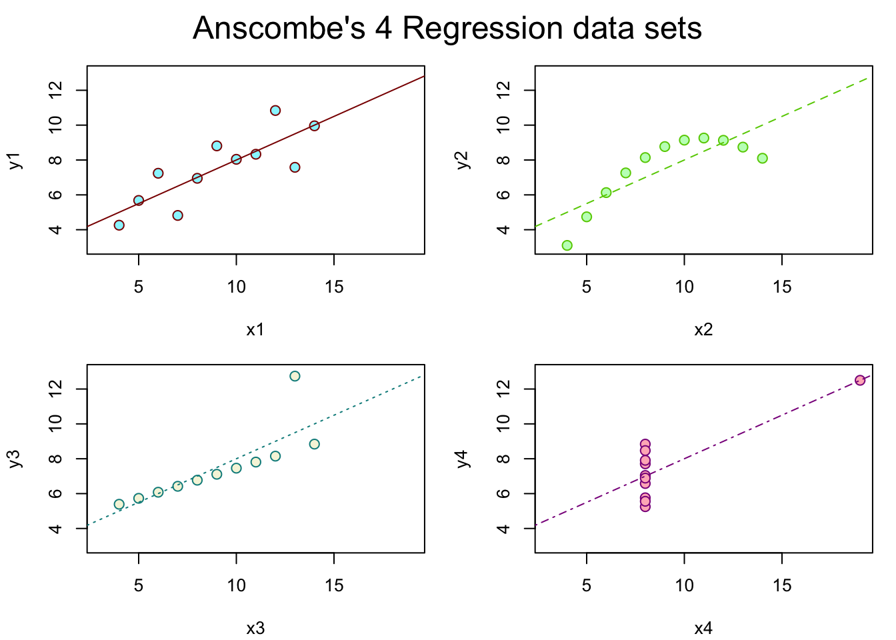

Show Hidden Code
# ## Anscombe (1973) Quartlet
# data(anscombe) # Load Anscombe's data
# View(anscombe) # View the data
# summary(anscombe)
#
# ## Simple version
# plot(anscombe$x1,anscombe$y1)
# summary(anscombe)
#
# # Create four model objects
# lm1 <- lm(y1 ~ x1, data=anscombe)
# summary(lm1)
# lm2 <- lm(y2 ~ x2, data=anscombe)
# summary(lm2)
# lm3 <- lm(y3 ~ x3, data=anscombe)
# summary(lm3)
# lm4 <- lm(y4 ~ x4, data=anscombe)
# summary(lm4)
# plot(anscombe$x1,anscombe$y1)
# abline(coefficients(lm1))
# plot(anscombe$x2,anscombe$y2)
# abline(coefficients(lm2))
# plot(anscombe$x3,anscombe$y3)
# abline(coefficients(lm3))
# plot(anscombe$x4,anscombe$y4)
# abline(coefficients(lm4))
#
#
# ## Fancy version (per help file)
#
# ff <- y ~ x
# mods <- setNames(as.list(1:4), paste0("lm", 1:4))
#
# # Plot using for loop
# for(i in 1:4) {
# ff[2:3] <- lapply(paste0(c("y","x"), i), as.name)
# ## or ff[[2]] <- as.name(paste0("y", i))
# ## ff[[3]] <- as.name(paste0("x", i))
# mods[[i]] <- lmi <- lm(ff, data = anscombe)
# print(anova(lmi))
# }
#
# sapply(mods, coef) # Note the use of this function
# lapply(mods, function(fm) coef(summary(fm)))
#
# # Preparing for the plots
# op <- par(mfrow = c(2, 2), mar = 0.1+c(4,4,1,1), oma = c(0, 0, 2, 0))
#
# # Plot charts using for loop
# for(i in 1:4) {
# ff[2:3] <- lapply(paste0(c("y","x"), i), as.name)
# plot(ff, data = anscombe, col = "red", pch = 21, bg = "orange", cex = 1.2,
# xlim = c(3, 19), ylim = c(3, 13))
# abline(mods[[i]], col = "blue")
# }
# mtext("Anscombe's 4 Regression data sets", outer = TRUE, cex = 1.5)
# par(op)
#
data(anscombe)
## Define line types, colors, and background colors
line_types <- c(1, 2, 3, 4) # Use different line types (1 = solid, 2 = dashed, 3 = dotted, 4 = dotdash)
line_colors <- c("darkred", "chartreuse3", "cyan4", "darkmagenta") # Use different line colors
bg_colors <- c("cadetblue1", "darkseagreen1", "beige", "lightpink") # Use different background colors
# Define the formula 'ff' for regression
ff <- y ~ x
# Create four model objects and plots
op <- par(mfrow = c(2, 2), mar = 0.1+c(4,4,1,1), oma = c(0, 0, 2, 0))
for (i in 1:4) {
ff[2:3] <- lapply(paste0(c("y","x"), i), as.name)
lmi <- lm(ff, data = anscombe)
# Customize the plot using the defined line types, colors, and background colors
plot(ff, data = anscombe, col = line_colors[i], pch = 21, bg = bg_colors[i], cex = 1.2,
xlim = c(3, 19), ylim = c(3, 13))
abline(lmi, col = line_colors[i], lty = line_types[i])
}
mtext("Anscombe's 4 Regression data sets", outer = TRUE, cex = 1.5)
Show Hidden Code
par(op)